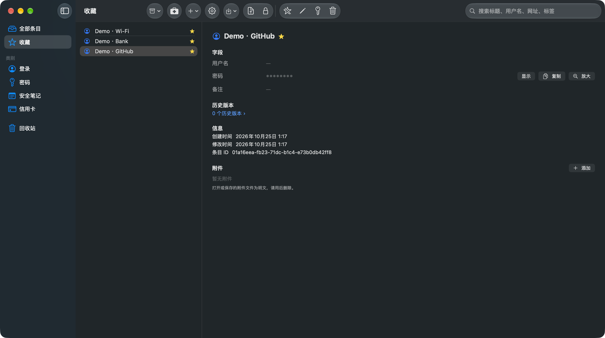

零云可以查，查的是发出去的那个 App
沙箱开启，唯一的网络权限是更新检查用的客户端连接，没有服务端监听。对二进制跑 otool -L 看不到任何第三方网络框架；闲置时 lsof 看不到一条连接。App 内置「网络能力自证」页，把这几条命令原样给你，复制即可执行。
Bitcoffer 把密码、密钥和凭据存在你的 Mac 上。没有云同步，没有账号，没有遥测——唯一的出站请求是更新检查，而「它没有联网能力」这件事，你可以自己查。
macOS 14+ · App Sandbox · Touch ID · 本地 MCP 服务

多数密码管理器请你相信它。Bitcoffer 把检查手段直接交给你：读权限声明、列链接的框架、看运行时的网络连接。边界由 App Sandbox 守，你只负责确认它守住了。
沙箱开启，唯一的网络权限是更新检查用的客户端连接，没有服务端监听。对二进制跑 otool -L 看不到任何第三方网络框架；闲置时 lsof 看不到一条连接。App 内置「网络能力自证」页，把这几条命令原样给你，复制即可执行。
本地 MCP 服务提供 4 个只读工具。密钥通过 run_with_secret 注入子进程环境，永不回传到模型上下文——AI 拿得到执行结果，拿不到值。
Rust 核心 + SwiftUI 前端，App Sandbox，Touch ID 解锁，菜单栏常驻，⌥⌘P 全局快捷键，界面中英双语。
密码管理器的价值不该靠扣押数据来维持。Bitcoffer 的库在本地，格式公开，进出都留了门。
从 1Password（1PUX）、CSV 或 opvault 导入，也可以直接新建自己的库。
Touch ID 或主密码；密钥材料留在钥匙串与内存，不落盘。
菜单栏、全局快捷键，或让本地 MCP 把凭据注入给 AI 工具。
导出 1PUX 兼容格式或 CSV，加密备份带恢复路径。
Bitcoffer 是专有软件。使用受你下载或购买时接受的条款约束；通过 App Store 分发的副本，同时适用 Apple 标准最终用户许可协议。本仓库不以开源或源码可见许可证发布，未获授权不得复制、修改或再分发源码。
Homebrew 安装，或从 Releases 下载 DMG。安装包已签名并通过 Apple 公证。
brew install --cask cygnusyang/bitcoffer/bitcoffer